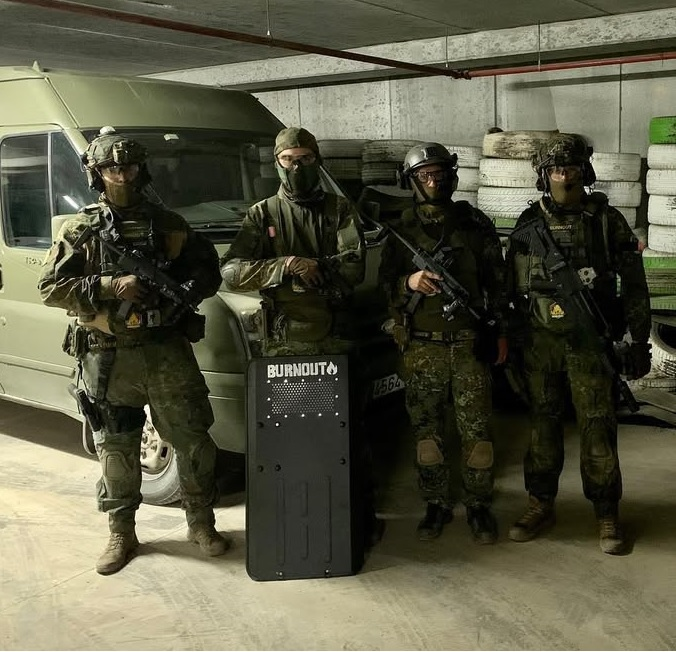

Quienes somos?

Bienvenidos a Burnout Airsoft. Todo comenzo en los pasillos del instituto. Eramos un grupo de amigos que, tras clase, se refugiaba en partidas online y charlas interminables sobre nuestras pequenas batallas. Aquellos momentos nos ayudaban a desconectar del estres de los estudios, hasta que llego un punto en el que ni eso era suficiente. Nos faltaba tiempo, energia y empezabamos a quemarnos.
Fue entonces cuando dimos con un nombre que nos definia a la perfeccion: Burnout. Ese sindrome que sentimos todos alguna vez, pero que tambien nos empujo a buscar algo mas alla de las pantallas.
Pasaron los anos, cada uno siguio su camino, pero el grupo nunca se rompio. Seguiamos quedando, aunque fuera a ratitos, para reconectar y mantener viva esa chispa que nos unia. Y entonces, en el cumpleanos de Joma, decidimos probar algo nuevo: Airsoft.
Lo que empezo como una partida de alquiler se convirtio en una nueva pasion. Desde entonces, hemos cambiado los mandos por replicas, y los cascos por mascaras. Nos hemos ido haciendo un hueco en esta comunidad, conociendo a gente que ya forma parte de nuestra historia.